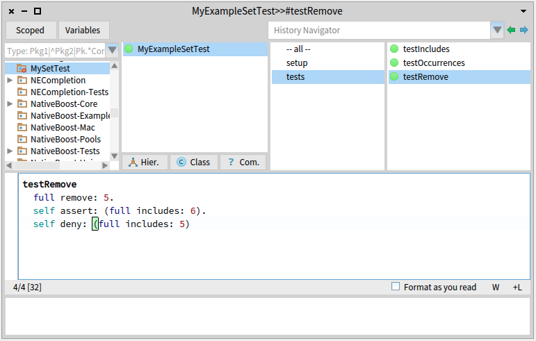

3 SUnit by example
In this chapter we present a small example showing how simple it is to use SUnit.
Before going into the details of SUnit (see next Chapter), we will show a step-by-step example.
We use an example that tests the class Set. Try entering the code as we go along.
We will create a test i.e., create a context (also called a fixture), execute a stimulus, and verify that some assertions are working.
If you already read the SUnit chapter on Pharo by Example book you can skip this chapter since the contents are the same.
3.1 Step 1: Create the test class
First, you should create a new subclass of TestCase called
MyExampleSetTest that looks like this:
TestCase << #MyExampleSetTest
package: 'MySetTest'The class MyExampleSetTest groups all the tests related to the class Set.
As we will show later, we will use it to define the context in which the tests will run.
The name of the class is not critical, but by convention, it should end in
Test. If you define a class called Pattern and call the corresponding
test class PatternTest, the two classes will be alphabetized together in the
browser (assuming that they are in the same package). It is critical that
your class is a subclass of TestCase.
Must I subclass TestCase?
In JUnit you can build a TestSuite from an arbitrary class containing test* methods. In SUnit you can do the same but you will then have to create a suite
by hand and your class will have to implement all the essential TestCase methods like assert:. We recommend, however, that you not try to do this.
The framework is there: use it.
3.2 Step 2: A first test
We start by defining a method named testIncludes.
Pay attention to the 'test' part is important.
Each method represents one test.
The names of the methods should start with the string 'test' so that SUnit will collect them into test suites.
Test methods take no arguments.
This method creates two sets one empty and one full.
This is the context or fixture of the test.
Second we perform some action on the test: here we execute the method includes:,
and third we validate the output using assertion via the assert: message.
The method assert: checks that the argument is a boolean true.
Define the following test methods. The first test, named testIncludes, tests the includes: method of Set. For example, the test says that sending the message includes: 5 to a set containing 5 should return true.
MyExampleSetTest >> testIncludes
| full empty |
full := Set with: 5 with: 6.
empty := Set new.
self assert: (full includes: 5).
self assert: (full includes: 6).
self assert: (empty includes: 5) not3.3 Step 3: Run the tests
The easiest way to run the tests is directly from the browser. Press on the icon on the side of the class name, or on an individual test method. The test methods will be flagged depending on whether they pass or not (as shown in 3.1).

3.4 Step 4: Another test
Following the same pattern, here is a test verifying that the method occurrencesOf: works as expected.
The second test, named testOccurrences, verifies that the number of occurrences of 5 in full set is equal to one, even if we add another element 5 to the set.
MyExampleSetTest >> testOccurrences
| full empty |
full := Set with: 5 with: 6.
empty := Set new.
self assert: (empty occurrencesOf: 0) equals: 0.
self assert: (full occurrencesOf: 5) equals: 1.
full add: 5.
self assert: (full occurrencesOf: 5) equals: 1Note that we use the message assert:equals: and not assert: as in the first test.
We could have used assert:.
But the message assert:equals: is better since it reports the error in a much better way.
When an assertion is failing, assert:equals: shows the expected value and the value received.
While assert: just mentions that something is not true.
Now make sure that your test is passing too.
3.5 Step 5: Factoring out context
As you see in the two previous steps, we started to repeat the same context.
This is not really nice, so we will factor the fixture out of the tests by defining instance variables in the class and
a method setUp to initialize them.
A TestCase class defines the context in which the tests will run.
We will add the two instance variables full and empty that
we will use to represent a full and an empty set.
TestCase << #MyExampleSetTest
slots: { #full . #empty};
package: 'MySetTest'The next step is to initialize such instance variables.
3.6 Step 6: Initialize the test context
The message TestCase >> setUp defines the context in which the tests will
run, a bit like an initialize method. setUp is invoked before the execution
of each test method defined in the test class.
Define the setUp method as follows, to initialize the empty variable to
refer to an empty set and the full variable to refer to a set containing two
elements.
MyExampleSetTest >> setUp
super setUp.
empty := Set new.
full := Set with: 5 with: 6In testing jargon, the context is called the fixture for the test and the setUp method is responsible to initialize such fixture.
Updating existing tests
We change the two test methods to take advantage of the shared initialization. We remove the fixture code and obtain the following methods:
MyExampleSetTest >> testIncludes
self assert: (full includes: 5).
self assert: (full includes: 6).
self assert: (empty includes: 5) notMyExampleSetTest >> testOccurrences
self assert: (empty occurrencesOf: 0) equals: 0.
self assert: (full occurrencesOf: 5) equals: 1.
full add: 5.
self assert: (full occurrencesOf: 5) equals: 1Clearly, these tests rely on the fact that the setUp method has already run.
Taking advantage of setUp
We test that the set no longer contains the element 5 after we have removed it.
MyExampleSetTest >> testRemove
full remove: 5.
self assert: (full includes: 6).
self deny: (full includes: 5)Note the use of the method TestCase >> deny: to assert something that should not be true.
The expression aTest deny: anExpression is equivalent to
the expression aTest assert: anExpression not, but is much more readable and expresses the intent more clearly.
3.7 Step 7: Debugging a test
Introduce a bug in MyExampleSetTest >> testRemove and run the tests again.
For example, change 6 to 7, as in:
MyExampleSetTest >> testRemove
full remove: 5.
self assert: (full includes: 7).
self deny: (full includes: 5)The tests that did not pass (if any) are listed in the right-hand panes of the Test Runner. If you want to debug one, to see why it failed, just click on the name. Alternatively, you can execute one of the following expressions:
(MyExampleSetTest selector: #testRemove) debug
MyExampleSetTest debug: #testRemove3.8 Step 8: Interpret the results
The method assert: is defined in the class TestAsserter. This is a
superclass of TestCase and therefore all other TestCase subclasses and
is responsible for all kinds of test result assertions. The assert: method
expects a boolean argument, usually the value of a tested expression. When the
argument is true, the test passes; when the argument is false, the test fails.
There are actually three possible outcomes of a test: passing, failing, and raising an error.
- Passing. The outcome that we hope for is that all of the assertions in the test are true, in which case the test passes. In the test runner, when all of the tests pass, the bar at the top turns green. However, there are two other ways that running a test can go wrong.
- Failing. The obvious way is that one of the assertions can be false, causing the test to fail.
- Error. The other possibility is that some kind of error occurs during the execution of the test, such as a message not understood error or an index out of bounds error. If an error occurs, the assertions in the test method may not have been executed at all, so we can't say that the test has failed; nevertheless, something is clearly wrong!
In the test runner, failing tests cause the bar at the top to turn yellow, and are listed in the middle pane on the right, whereas tests with errors cause the bar to turn red, and are listed in the bottom pane on the right.
Modify your tests to provoke both errors and failures.
3.9 Conclusion
- To maximize their potential, unit tests should be fast, repeatable, independent of any direct human interaction, and cover a single unit of functionality.
- Tests for a class called
MyClassbelong in a class namedMyClassTest, which should be introduced as a subclass ofTestCase. - Initialize your test data in a
setUpmethod. - Each test method should start with the word test.
- Use the
TestCasemethodsassert:,deny:and others to make assertions. - Run tests!